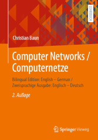
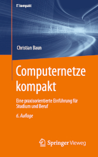

|
|
Jump to the page in German language
|
|


|
Computer networks allow to connect individual computers systems for communication and resource sharing. Communication via computer networks is realized via different protocols of different layers of reference models (OSI reference model, TCP/IP reference model, hybrid reference model). At the beginning of the course, an introduction to the required fundamentals of the computer sciences and computer networks takes place. Next, the protocols and their classification into established reference models is discussed. The main focus of the course is to explain the way, the data is transmitted through the different protocol layers and via different transmission media. The exercise sessions in WS2425 are supervised in collaboration with Henry-Norbert Cocos and Wei Yin Shing. The course (lectures, exercises and exam) is held in English language. All slide sets and exercise sheets are available in English and in German language. The content of the English and German slide sets and exercise sheets is identical. A list of technical terms provides this page. The slide sets are the basis for the sixth edition of the German-language book Computernetze kompakt, was published in autumn 2022 by Springer Vieweg. ISBN: 978-3-662-65362-3 Also, a bilingual (English-German) edition exists Computer Networks / Computernetze, which was published in autumn 2022 (second edition) by Springer Vieweg. ISBN: 978-3-658-38892-8
|
| Date | Time | Room | Event | Topics |
|---|---|---|---|---|
| 23.10.2024 | 10:00-11:30 | 4-8 | Lecture | Discussion of slide set 1 (slides 1-29) |
| 30.10.2024 | 10:00-11:30 | 4-8 | Lecture | Discussion of slide set 1 (slides 30-46) + slide set 2 (slides 1-12) |
| 06.11.2024 | 10:00-11:30 | 4-8 | Lecture | Discussion of slide set 2 (slides 13-54) |
| 13.11.2024 | 10:00-11:30 | 4-8 | Lecture | Discussion of slide set 3 (slides 1-18) + slide set 4 (slides 1-30) |
| 20.11.2024 | 10:00-11:30 | 1-131 | Lecture | Discussion of slide set 5 (slides 1-29) |
| 27.11.2024 | 10:00-11:30 | 4-8 | Lecture | Discussion of slide set 5 (slides 30-39) + slide set 6 (slides 1-32) |
| 04.12.2024 | 10:00-11:30 | 4-8 | Lecture | Discussion of slide set 6 (slides 33-35) + slide set 7 (slides 1-25) |
| 11.12.2024 | 10:00-11:30 | 4-8 | Lecture | Discussion of slide set 7 (slides 26-48) |
| 18.12.2024 | 10:00-11:30 | 1-131 | Lecture | Trial Lectures |
| 18.12.2024 | 11:45-13:15 | 1-234 | Quiz | Christmas Special |
| 25.12.2024 | Christmas break | |||
| 01.01.2025 | Christmas break | |||
| 08.01.2025 | 10:00-11:30 | 1-131 | Lecture | Discussion of slide set 7 (slides 49-78) |
| 15.01.2025 | 10:00-11:30 | 1-131 | Lecture | Discussion of slide set 8 (slides 1-50) |
| 22.01.2025 | 10:00-11:30 | 1-131 | Lecture | Discussion of slide set 9 (slides 1-23) |
| 29.01.2025 | 10:00-11:30 | 1-131 | Lecture | Discussion of slide set 9 (slides 24-50) |
| 05.02.2025 | 10:00-11:30 | 1-131 | Lecture | Discussion of slide set 10 (slides 1-45) |
| 12.02.2025 | 10:00-11:30 | 1-131 | Lecture | Q&A session |
| 25.02.2025 | 14:00-15:30 | 4-[Audimax|8|109|110|111|112] | Exam | The exam covers all discussed slide sets and exercise sheets |
| Slide sets | Topics | ||
|---|---|---|---|
| Slide set 1 | Organisational information, fundamentals of computer networks, protocols and reference models | ||
| Slide set 2 | Physical layer (part 1) | ||
| Slide set 3 | Physical layer (part 2) | ||
| Slide set 4 | Data Link layer (part 1) | ||
| Slide set 5 | Data Link layer (part 2) | ||
| Slide set 6 | Data Link layer (part 3) | ||
| Slide set 7 | Network layer (part 1) | ||
| Slide set 8 | Network layer (part 2) | ||
| Slide set 9 | Transport layer | ||
| Slide set 10 | Application layer | ||
| Slide set 11 | Cryptography (fundamentals, symmetric key cryptography) | ||
| Slide set 12 | Cryptography (asymmetric key cryptography, key exchange, hash functions) | ||
| Slide set 13 | Steganography, copyright traps and digital watermarking | ||
The slide sets 1 to 10 are relevant for the exam.
The slide sets 11 to 13 are not relevant for the exam.
| Exercise sheets | Topics | Solutions | |||
|---|---|---|---|---|---|
| Exercise sheet 1 | Topics of slide set 1 (Fundamentals) | ||||
| Exercise sheet 2 | Topics of slide set 2 + 3 (Physical layer) | ||||
| Exercise sheet 3 | Topics of slide set 4 + 5 + 6 (Data link layer) | ||||
| Exercise sheet 4 | Topics of slide set 7 + 8 (Network layer) | ||||
| Exercise sheet 5 | Topics of slide set 9 + 10 (Transport layer and Application layer) | ||||
| Exercise sheet 6 | Topics of slide set 11 + 12 + 13 (Cryptography and Steganography) | ||||
The exercise sheets 1 to 5 are relevant for the exam.
Exercise sheet 6 is not relevant for the exam.
| Semester | Exams | Time limit | University | Sample solutions | ||
|---|---|---|---|---|---|---|
| WS2324 | 90 Minutes | Frankfurt UAS | ||||
| WS2223 | 90 Minutes | Frankfurt UAS | ||||
| WS2021 | 90 Minutes | Frankfurt UAS | ||||
| WS1920 | 90 Minutes | Frankfurt UAS | ||||
| WS1819 | 90 Minutes | Frankfurt UAS | ||||
| WS1718 | 90 Minutes | Frankfurt UAS | ||||
| SS2017 | 90 Minutes | Frankfurt UAS | ||||
| WS1617 | 90 Minutes | Frankfurt UAS | ||||
| SS2016 | 90 Minutes | Frankfurt UAS | ||||
| WS1516 | 90 Minutes | Frankfurt UAS | ||||
| SS2015 | 90 Minutes | Frankfurt UAS | ||||
| WS1415 | 90 Minutes | FH Frankfurt | ||||
| SS2014 | 90 Minutes | FH Frankfurt | ||||
| WS1314 | 90 Minutes | FH Frankfurt | ||||
| SS2012 | 90 Minutes | HS Darmstadt | ||||
| Exercise Sheet | ||
| Network Components |

| Result of the course evaluation |
The best way to reach me is via email: christianbaun@fb2.fra-uas.de
|
Prof. Dr. Christian Baun Frankfurt University of Applied Sciences (1971-2014: Fachhochschule Frankfurt am Main) Faculty of Computer Science and Engineering Last updated: February 11th 2025 |